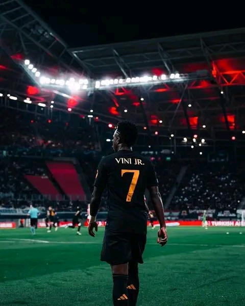

noticias

Vinícius Junior não leva a bola de ouro da temporada 2023/2024. O prémio foi para o medio defensivo do Manchester City da Inglaterra Rodrigo mais conhecido pelo nome de Rodri

Vini jr no seu auge com estatísticas incriveis

Huambo, Benguela,Huíla, zaire,Uíge e Luanda vão beneficiar de 10mil bolsas de estudos para o Brasil do FIJE e da learn group education
Vinícius Junior não leva a bola de ouro da temporada 2023/2024. O prémio foi para o medio defensivo do Manchester City da Inglaterra Rodrigo mais conhecido pelo nome de Rodri